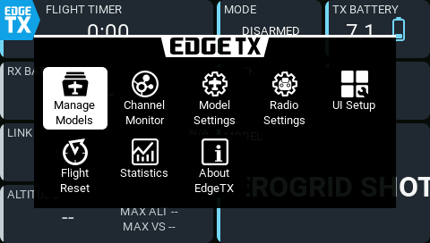
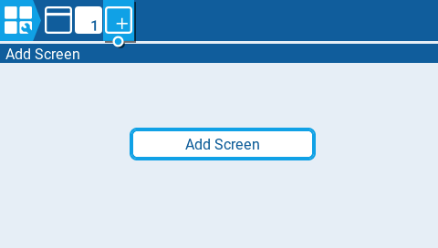
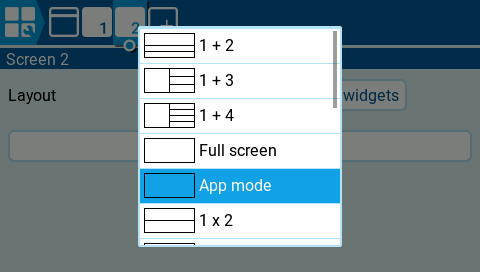
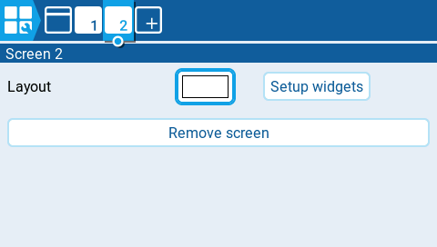
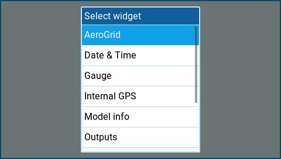
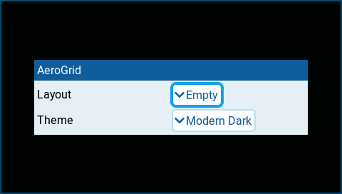

Add a dashboard
Add AeroGrid to a radio screen and choose a layout. Install AeroGrid first and select the model you want to use.
Add a screen
Open the main screen's top-left menu and choose UI Setup.

Select the + tab, then tap Add Screen.

On the new screen, tap the Layout thumbnail and choose App mode. This makes one widget fill the screen.

Tap Setup widgets, then tap the empty widget area.

Choose AeroGrid in Select widget.

In the AeroGrid settings, choose Layout. Select Empty to build your own dashboard, or Default to start with the bundled aircraft dashboard. Choose Modern Dark or Modern Light for Theme.

Press RTN to close the settings and leave setup. Your dashboard is now on the new screen. Repeat these steps to add another dashboard.
In fullscreen, tap AeroGrid → Model settings and set Arm switch to the physical position or logical switch that means armed. Changes save automatically across the model's dashboards. Arming is not a widget option beside Layout and Theme.
See Model settings for shared arming, flight detection, session reset, and the flight-status output used with your own sounds.
Understand layouts
A dashboard is AeroGrid on a radio screen. A layout defines its panels, their positions and sizes, and their settings, including sources and alarms. Choose a layout to decide what that dashboard displays.
| Layout | Purpose |
|---|---|
| Empty | A blank starting point for your own dashboard. Shows instructions until you start editing. |
| Default | A ready-made aircraft dashboard. Configure its sources, switches, battery cell count, and alarms for your model before using it. |
| Diagnostics | A diagnostics dashboard for checking loaded components and errors. |
| Palette | Fixed theme samples: color tokens, text, bars, a dial, and every panel state. Not flight data. |
Bundled layouts are stored in /WIDGETS/AeroGrid/layouts/. Your saved layouts
are stored separately in /AEROGRID/layouts/, so upgrading AeroGrid leaves
them untouched.
Save updates the current layout. For a bundled layout it creates your
copy in /AEROGRID/layouts/ under the same name, leaving the bundled original
untouched.
Save as... creates a separately named layout.
Several dashboards, even on different models, can select the same layout. They share all panel settings, so check that the sources and switches suit each model. Saving changes under that name affects all dashboards using it when they next reload.
Restart the radio after saving a new name so it appears in the Layout picker. A missing layout falls back to Default.
App mode and Full screen
| Layout | What you see |
|---|---|
| App mode | A dashboard covering the display, without the EdgeTX top bar, flight-mode label, sliders, or trims. The menu button remains in the top-left corner. |
Full screen (1 x 1) |
One dashboard widget, with the option to keep EdgeTX's top bar, flight-mode label, sliders, and trims. |
Use App mode for a clean dashboard, or Full screen to keep the radio's standard information alongside it. In App mode, a wider top-left panel leaves more room beside the menu button.
To arrange and configure panels, continue with Edit a dashboard on the radio. For palette settings, see Customize themes.